11 Comunicação
11.1 Introdução
No Capítulo 10, você aprendeu como usar gráficos como ferramentas para exploração. Ao fazer gráficos exploratórios, você sabe — mesmo antes de olhar — quais variáveis o gráfico exibirá. Você criou cada gráfico com um propósito, pôde examiná-lo rapidamente e depois passar para o próximo gráfico. No decorrer da maior parte das análises, você produzirá dezenas ou centenas de gráficos, a maioria dos quais será imediatamente descartada.
Agora que você entende seus dados, você precisa comunicar sua compreensão a outras pessoas. Seu público provavelmente não compartilhará seu conhecimento prévio e não conhecerá profundamente os dados. Para ajudar outros a construirem rapidamente um bom modelo mental dos dados, você precisará investir um esforço considerável para tornar seus gráficos o mais autoexplicativos possível. Neste capítulo, você aprenderá algumas das ferramentas que o pacote ggplot2 fornece para fazer isso.
Este capítulo se concentra nas ferramentas necessárias para criar bons gráficos. Presumimos que você sabe o que quer e só precisa saber como fazer. Por esse motivo, é altamente recomendável combinar este capítulo com um bom livro de visualização geral. Gostamos particularmente do livro The Truthful Art, de Albert Cairo. Ele não ensina a mecânica de criação de visualizações, mas concentra-se no que você precisa pensar para criar gráficos eficazes.
11.1.1 Pré-requisitos
Neste capítulo, focaremos mais uma vez no ggplot2. Também usaremos um pouco do pacote dplyr para transformação de dados, scales para substituir quebras, rótulos, transformações e paletas padrão, e alguns pacotes de extensão ggplot2, incluindo ggrepel (https://ggrepel.slowkow.com) de Kamil Slowikowski e o patchwork (https://patchwork.data-imaginist.com) de Thomas Lin Pedersen. Usaremos também o pacote dados e seus conjuntos de dados milhas, predisentes_eua e diamante. Não se esqueça que você precisará instalar esses pacotes com install.packages() se ainda não os tiver.
11.2 Rótulos
O lugar mais fácil para começar a transformar um gráfico exploratório em um gráfico expositivo é com bons rótulos (labels). Você adiciona rótulos com a função labs().
ggplot(milhas, aes(x = cilindrada, y = rodovia)) +
geom_point(aes(color = classe)) +
geom_smooth(se = FALSE) +
labs(
x = "Cilindrada do Motor (L)",
y = "Economia de combustível na rodovia (mpg)",
color = "Tipo de veículo",
title = "Eficiência de combustível geralmente diminui com o tamanho do motor",
subtitle = "Dois lugares (carros esportivos) são uma exceção devido ao seu peso leve",
caption = "Dados de fueleconomy.gov"
)![Gráfico de dispersão de uso de combustível em rodovias versus cilindradas dos carros, onde os pontos são coloridos de acordo com a classe do carro. Uma curva suave seguindo a trajetória da relação entre eficiência de combustível nas rodovias versus as cilindradas dos carros está sobreposto. O eixo x é rotulado como "Cilindrada do Motor (L)" e o eixo y é rotulado como "Consumo de combustível na rodovia (mpg)". A legenda é rotulada como "Tipo de veículo". O gráfico é intitulado "Eficiência de combustível geralmente diminui com o tamanho do motor". O subtítulo é "Carros de dois lugares (carros esportivos) são uma exceção devido ao seu peso leve" e a legenda contém "Dados de fueleconomy.gov".](communication_files/figure-html/unnamed-chunk-3-1.png)
O objetivo do título (title) de um gráfico é resumir a descoberta principal. Evite títulos que apenas descrevam o gráfico, por exemplo, “Um gráfico de dispersão da cilindrada do motor versus economia de combustível”.
Se você precisar adicionar mais texto, existem dois outros argumentos de rótulos úteis: subtitle (subtítulo) adiciona detalhes em uma fonte menor abaixo do título e caption (legenda) adiciona texto no canto inferior direito do gráfico, geralmente usado para descrever a fonte dos dados. Você também pode usar labs() para substituir os títulos dos eixos e das legendas. Geralmente é uma boa ideia substituir nomes curtos de variáveis por descrições mais detalhadas e incluir as unidades.
É possível usar equações matemáticas em vez de sequências de texto. Basta trocar "" por quote() e ler sobre as opções disponíveis em ?plotmath:
df <- tibble(
x = 1:10,
y = cumsum(x^2)
)
ggplot(df, aes(x, y)) +
geom_point() +
labs(
x = quote(x[i]),
y = quote(sum(x[i] ^ 2, i == 1, n))
)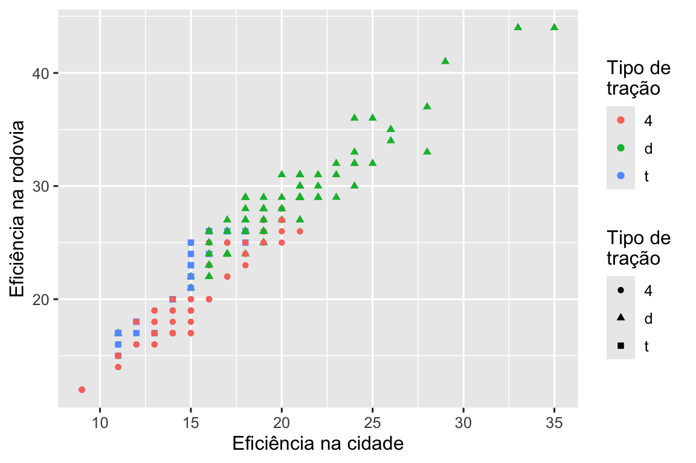
11.2.1 Exercícios
Crie um gráfico com os dados de economia de combustível (milhas) com rótulos personalizados de
title,subtitle,caption,x,yecolor.-
Recrie o gráfico a seguir usando os dados de economia de combustível. Observe que as cores e os formatos dos pontos variam de acordo com o tipo de tração.

Pegue um gráfico exploratório que você criou no último mês e adicione rótulos informativos para facilitar a compreensão de outras pessoas.
11.3 Anotações
Além de rotular os principais componentes do seu gráfico, muitas vezes é útil rotular observações individuais ou grupos de observações. A primeira ferramenta que você tem à sua disposição é geom_text(). geom_text() é semelhante a geom_point(), mas tem uma estética adicional: label. Isso torna possível adicionar rótulos textuais aos seus gráficos.
Existem duas fontes possíveis de rótulos para as observações. Primeiro, você pode ter um arquivo que fornece estes rótulos. No gráfico a seguir, retiramos os carros com maior cilindradas em cada tipo de tração e salvamos suas informações como um novo conjunto de dados rotulos_info.
rotulos_info <- milhas |>
group_by(tracao) |>
arrange(desc(cilindrada)) |>
slice_head(n = 1) |>
mutate(
tipo_tracao = case_when(
tracao == "d" ~ "tração dianteira",
tracao == "t" ~ "tração traseira",
tracao == "4" ~ "4x4"
)
) |>
select(cilindrada, rodovia, cilindrada, tipo_tracao)
#> Adding missing grouping variables: `tracao`
rotulos_info
#> # A tibble: 3 × 4
#> # Groups: tracao [3]
#> tracao cilindrada rodovia tipo_tracao
#> <chr> <dbl> <int> <chr>
#> 1 4 6.5 17 4x4
#> 2 d 5.3 25 tração dianteira
#> 3 t 7 24 tração traseiraEm seguida, usamos esse novo conjunto de dados para rotular diretamente os três grupos e substituir a legenda por rótulos colocados diretamente no gráfico. Usando os argumentos fontface e size podemos personalizar a aparência dos rótulos de texto. Eles são maiores que o restante do texto do gráfico e estão em negrito. (theme(legend.position = "none") desativa todas as legendas — falaremos sobre isso mais tarde.
ggplot(milhas, aes(x = cilindrada, y = rodovia, color = tracao)) +
geom_point(alpha = 0.3) +
geom_smooth(se = FALSE) +
geom_text(
data = rotulos_info,
aes(x = cilindrada, y = rodovia, label = tipo_tracao),
fontface = "bold", size = 5, hjust = "right", vjust = "bottom"
) +
theme(legend.position = "none")
#> `geom_smooth()` using method = 'loess' and formula = 'y ~ x'
Observe o uso de hjust (justificação horizontal) e vjust (justificação vertical) para controlar o alinhamento do rótulo.
No entanto, o gráfico anotado que fizemos acima é difícil de ler porque os rótulos se sobrepõem entre si e com os pontos. Podemos usar a função geom_label_repel() do pacote ggrepel para resolver esses dois problemas. Este pacote ajustará automaticamente os rótulos para que não se sobreponham:
ggplot(milhas, aes(x = cilindrada, y = rodovia, color = tracao)) +
geom_point(alpha = 0.3) +
geom_smooth(se = FALSE) +
geom_label_repel(
data = rotulos_info,
aes(x = cilindrada, y = rodovia, label = tipo_tracao),
fontface = "bold", size = 5, nudge_y = 2
) +
theme(legend.position = "none")
#> `geom_smooth()` using method = 'loess' and formula = 'y ~ x'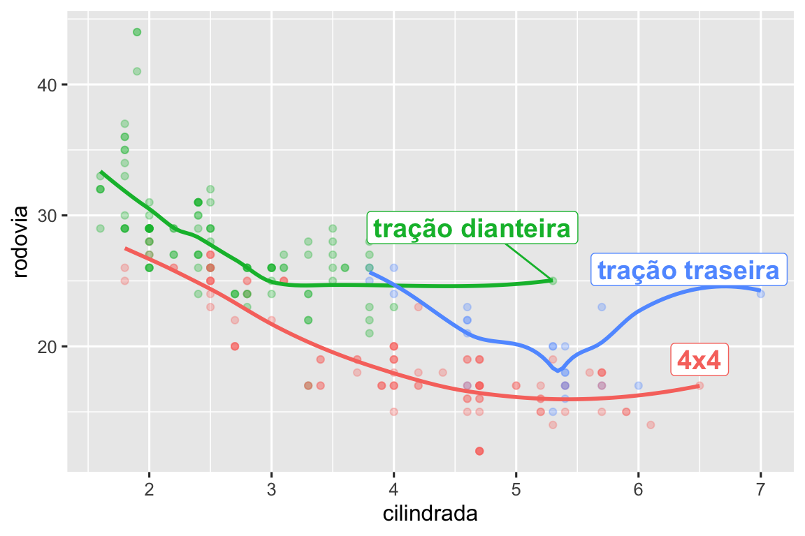
Você também pode usar a mesma ideia para destacar certos pontos em um gráfico com geom_text_repel() do pacote ggrepel. Observe outra técnica útil usada aqui: adicionamos uma segunda camada de pontos grandes e ocos para destacar ainda mais os pontos rotulados.
potenciais_discrepantes <- milhas |>
filter(rodovia > 40 | (rodovia > 20 & cilindrada > 5))
ggplot(milhas, aes(x = cilindrada, y = rodovia)) +
geom_point() +
geom_text_repel(data = potenciais_discrepantes, aes(label = modelo)) +
geom_point(data = potenciais_discrepantes, color = "red") +
geom_point(
data = potenciais_discrepantes,
color = "red", size = 3, shape = "circle open"
)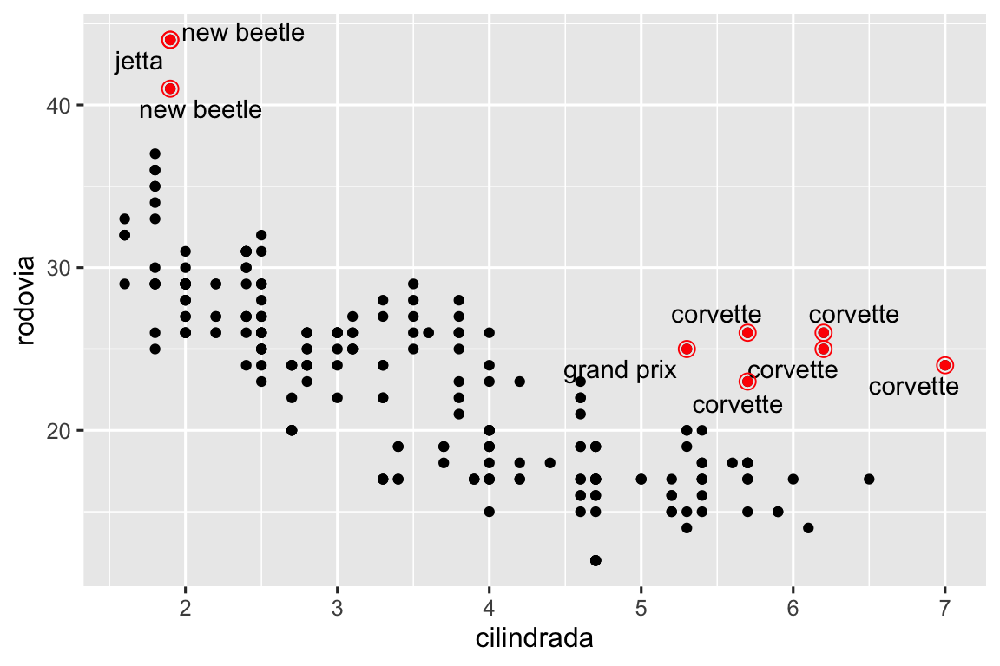
Lembre-se, além de geom_text() e geom_label(), você tem muitas outras geometrias (geoms) no ggplot2 disponíveis para ajudar a anotar seu gráfico. Algumas ideias:
Use
geom_hline()egeom_vline()para adicionar linhas de referência. Freqüentemente, as tornamos grossas (linewidth = 2) e brancas (color = white) e as desenhamos abaixo da camada de dados primária. Isso os torna fáceis de ver, sem desviar a atenção dos dados.Use
geom_rect()para desenhar um retângulo ao redor dos pontos de interesse. Os limites do retângulo são definidos pela estéticaxmin,xmax,ymin,ymax. Como alternativa, consulte o pacote ggforce, especificamentegeom_mark_hull(), que permite anotar subconjuntos de pontos.Use
geom_segment()com o argumentoarrowpara chamar a atenção para um ponto com uma seta. Use a estéticaxeypara definir o local inicial exendeyendpara definir o local final.
Outra função útil para adicionar anotações aos gráficos é annotate(). Como regra geral, geoms são geralmente úteis para destacar um subconjunto de dados, enquanto annotate() é útil para adicionar um ou poucos elementos de anotação a um gráfico.
Para demonstrar o uso de annotate(), vamos criar algum texto para adicionar ao nosso gráfico. O texto é um pouco longo, então usaremos stringr::str_wrap() para adicionar quebras de linha automaticamente, dado o número de caracteres que você deseja por linha:
tendencia_texto <- "Motores com maiores cilindradas tendem a ter menor eficiência de combustível." |>
str_wrap(width = 30)
tendencia_texto
#> [1] "Motores com maiores\ncilindradas tendem a ter menor\neficiência de combustível."Em seguida, adicionamos duas camadas de anotação: uma com um argumento geom igual à label e outra igual à segment. As estéticas x e y em ambos definem onde a anotação deve começar, e as estéticas xend e yend na anotação do segmento definem a localização final do segmento. Observe também que o segmento é denominado como uma seta.
ggplot(milhas, aes(x = cilindrada, y = rodovia)) +
geom_point() +
annotate(
geom = "label", x = 3.5, y = 38,
label = tendencia_texto,
hjust = "left", color = "red"
) +
annotate(
geom = "segment",
x = 3, y = 35, xend = 5, yend = 25, color = "red",
arrow = arrow(type = "closed")
)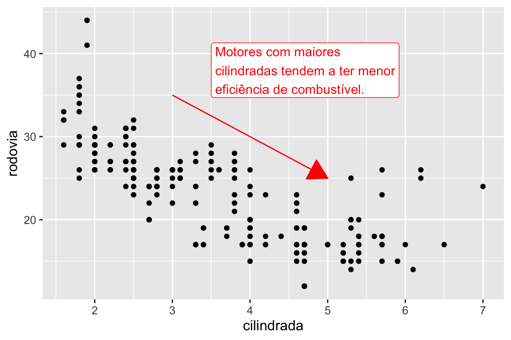
A anotação é uma ferramenta poderosa para comunicar as principais conclusões e recursos interessantes de suas visualizações. O único limite é a sua imaginação (e a sua paciência com o posicionamento das anotações para serem esteticamente agradáveis)!
11.3.1 Exercícios
Use
geom_text()com posições infinitas para colocar texto nos quatro cantos do gráfico.Use
annotate()para adicionar uma geom de ponto no meio de seu último gráfico sem ter que criar um tibble. Personalize a forma, o tamanho ou a cor do ponto.Como os rótulos com
geom_text()interagem com o facetamento (faceting)? Como você pode adicionar um rótulo a uma única faceta? Como você pode colocar um rótulo diferente em cada faceta? (Dica: pense no conjunto de dados que está sendo passado parageom_text().)Quais argumentos para
geom_label()controlam a aparência do fundo da caixa?Quais são os quatro argumentos para
arrow()? Como eles funcionam? Crie uma série de gráficos que demonstrem as opções mais importantes.
11.4 Escalas
A terceira maneira de melhorar a comunicação do seu enredo é ajustar a escala. As escalas controlam como os mapeamentos estéticos se manifestam visualmente.
11.4.1 Escalas padrão
Normalmente o ggplot2 adiciona automaticamente as escalas para você. Por exemplo, quando você digita:
ggplot(milhas, aes(x = cilindrada, y = rodovia)) +
geom_point(aes(color = classe))ggplot2 adiciona automaticamente uma escala por trás dos panos:
ggplot(milhas, aes(x = cilindrada, y = rodovia)) +
geom_point(aes(color = classe)) +
scale_x_continuous() +
scale_y_continuous() +
scale_color_discrete()Observe o esquema de nomenclatura das escalas: scale_ seguido do nome da estética, depois _ e depois o nome da escala. As escalas padrão são nomeadas de acordo com o tipo de variável com a qual se alinham: contínua, discreta, datahora ou data. scale_x_continuous() coloca os valores numéricos de cilindrada em uma linha numérica contínua no eixo x, scale_color_discrete() escolhe cores para cada uma das classes de carro, etc. Existem também muitas escalas fora do padrão que você aprenderá a seguir.
As escalas padrão foram cuidadosamente escolhidas para fazer um bom trabalho para uma ampla gama de insumos. No entanto, você pode querer substituir os padrões por dois motivos:
Você pode querer ajustar alguns parâmetros da escala padrão. Isso permite que você faça coisas como alterar as quebras nos eixos ou os rótulos das teclas na legenda.
Você pode querer substituir completamente a escala e usar um algoritmo completamente diferente. Muitas vezes você pode fazer melhor que o padrão porque sabe mais sobre os dados.
11.4.2 Marcações de eixo e chaves da legenda
Coletivamente, eixos e legendas são chamados de guias. Os eixos são usados para estética x e y; legendas são usadas para todo o resto.
Existem dois argumentos principais que afetam a aparência dos marcadores nos eixos e das chaves na legenda: breaks (quebras) e labels (rótulos). As quebras (breaks) controlam a posição dos marcadores ou os valores associados às chaves. Os rótulos (labels) controlam o texto associado a cada marcador/chave. O uso mais comum de breaks é substituir a escolha padrão:
ggplot(milhas, aes(x = cilindrada, y = rodovia, color = tracao)) +
geom_point() +
scale_y_continuous(breaks = seq(15, 40, by = 5)) 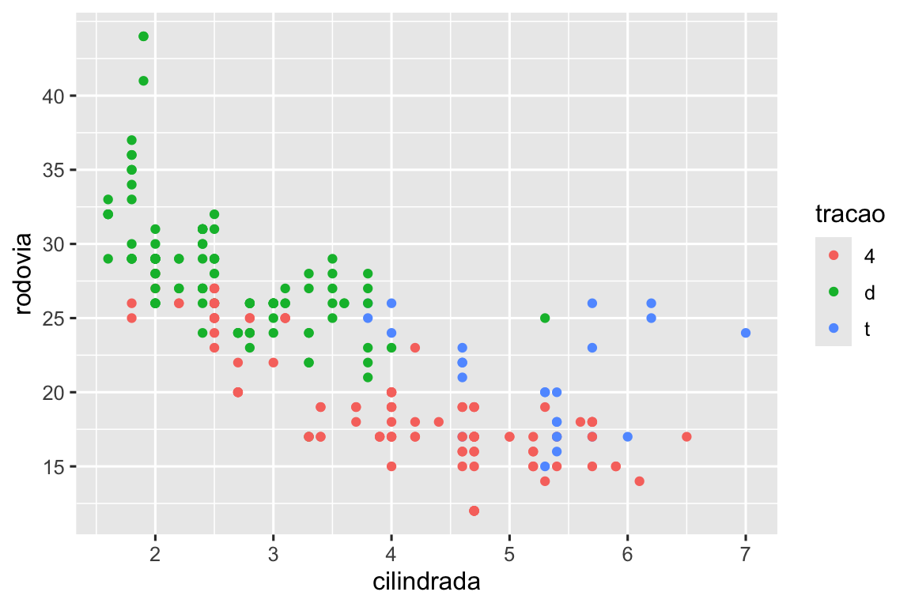
Você pode usar labels da mesma maneira (um vetor de caracteres do mesmo tamanho que breaks), mas também pode configurá-lo como NULL para suprimir completamente os rótulos. Isto pode ser útil para mapas ou para publicar gráficos onde não é possível compartilhar os números absolutos. Você também pode usar breaks e labels para controlar a aparência das legendas. Para escalas discretas para variáveis categóricas, rótulos podem ser uma lista nomeada de nomes de níveis existentes e os rótulos desejados para eles.
ggplot(milhas, aes(x = cilindrada, y = rodovia, color = tracao)) +
geom_point() +
scale_x_continuous(labels = NULL) +
scale_y_continuous(labels = NULL) +
scale_color_discrete(labels = c("4" = "4x4", "d" = "dianteira", "t" = "trazeira"))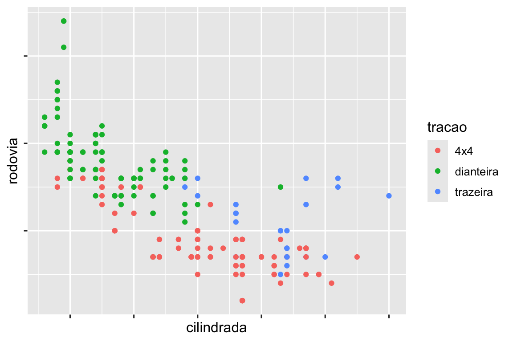
O argumento labels juntamente com funções de rotulagem do pacote scales também é útil para formatar números como moeda, porcentagem, etc. O gráfico à esquerda mostra a rotulagem padrão com label_dollar(), que adiciona um cifrão, bem como uma vírgula separadora de milhar. O gráfico à direita adiciona mais personalização dividindo os valores em dólares por 1.000 e adicionando um sufixo “K” (para “milhares”), bem como adicionando quebras personalizadas. Observe que breaks está na escala original dos dados.
# Left
ggplot(diamante, aes(x = preco, y = corte)) +
geom_boxplot(alpha = 0.05) +
scale_x_continuous(labels = label_dollar())
# Right
ggplot(diamante, aes(x = preco, y = corte)) +
geom_boxplot(alpha = 0.05) +
scale_x_continuous(
labels = label_dollar(scale = 1/1000, suffix = "K"),
breaks = seq(1000, 19000, by = 6000)
)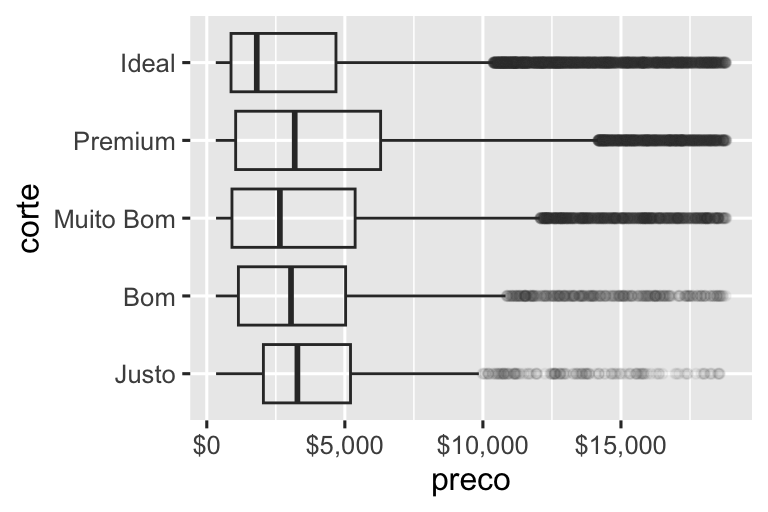
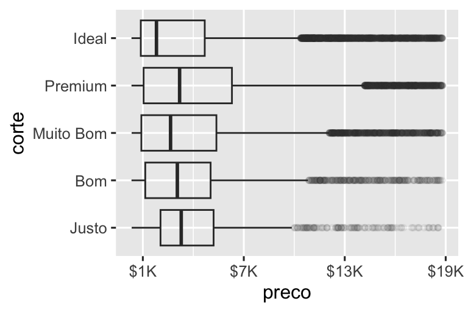
Outra função de rótulo interessante é a label_percent():
ggplot(diamante, aes(x = corte, fill = transparencia)) +
geom_bar(position = "fill") +
scale_y_continuous(name = "Porcentagem", labels = label_percent())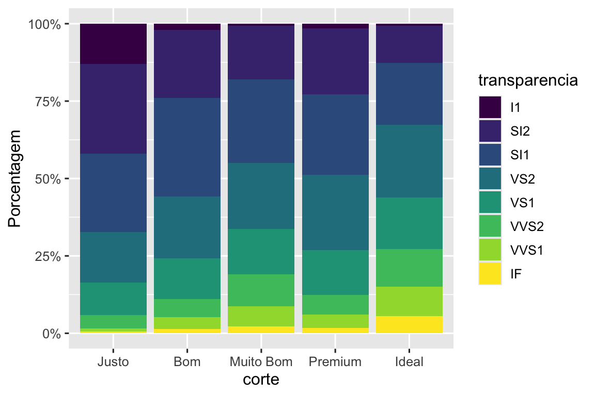
Outro uso de breaks é quando você tem relativamente poucos pontos de dados e deseja destacar exatamente onde as observações ocorrem. Por exemplo, veja este gráfico que mostra quando cada presidente dos EUA iniciou e terminou o seu mandato.
presidentes_eua |>
mutate(id = 33 + row_number()) |>
ggplot(aes(x = inicio, y = id)) +
geom_point() +
geom_segment(aes(xend = fim, yend = id)) +
scale_x_date(name = NULL, breaks = presidentes_eua$inicio, date_labels = "'%y")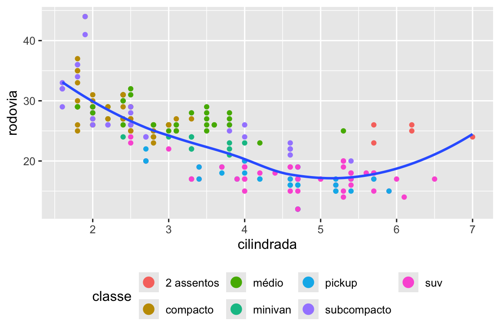
Observe que para o argumento breaks retiramos a variável inicio como um vetor com presidentes_eua$inicio porque não podemos fazer um mapeamento estético para este argumento. Observe também que a especificação de quebras e rótulos para escalas de data e datahora é um pouco diferente:
date_labelsleva uma especificação de formato, na mesma forma queparse_datetime().date_breaks(não mostrado aqui), recebe uma string como “2 dias” ou “1 mês”.
11.4.3 Layout da legenda
Na maioria das vezes você usará breaks e labels para ajustar os eixos. Embora ambos também funcionem para legendas, existem algumas outras técnicas que você provavelmente usará.
Para controlar a posição geral da legenda, você precisa usar uma configuração theme(). Voltaremos aos temas no final do capítulo, mas, resumidamente, eles controlam as partes não relacionadas a dados do gráfico. A configuração do tema legend.position controla onde a legenda é desenhada:
base <- ggplot(milhas, aes(x = cilindrada, y = rodovia)) +
geom_point(aes(color = classe))
base + theme(legend.position = "right") # o padrão
base + theme(legend.position = "left")
base +
theme(legend.position = "top") +
guides(color = guide_legend(nrow = 3))
base +
theme(legend.position = "bottom") +
guides(color = guide_legend(nrow = 3))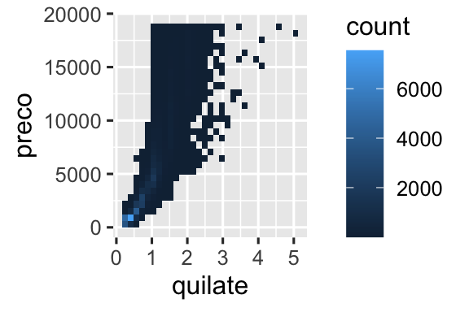
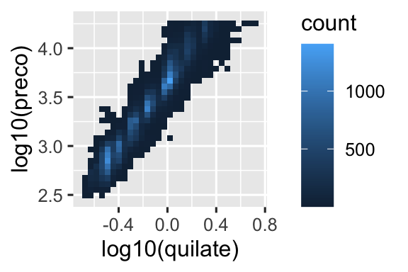
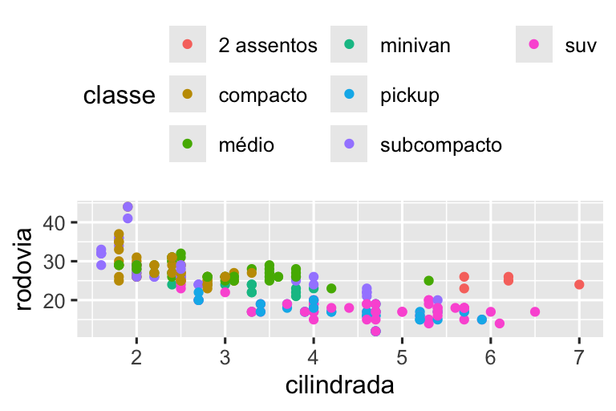
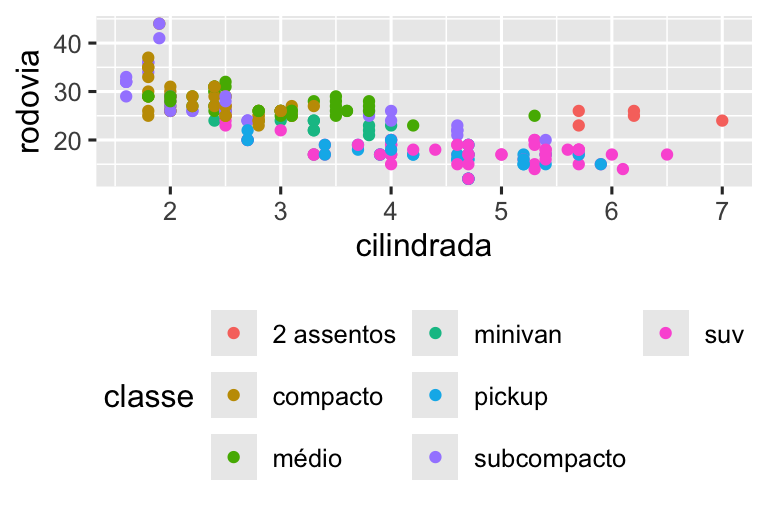
Se o seu gráfico for curto e largo, coloque a legenda na parte superior ou inferior, e se for alto e estreito, coloque a legenda à esquerda ou à direita. Você também pode usar legend.position = "none" para suprimir completamente a exibição da legenda.
Para controlar a exibição de legendas individuais, use guides() junto com guide_legend() ou guide_colorbar(). O exemplo a seguir mostra duas configurações importantes: controlar o número de linhas que a legenda usa com nrow e substituir uma das estéticas para aumentar os pontos. Isto é particularmente útil se você usou um alfa baixo para exibir muitos pontos em um gráfico.
ggplot(milhas, aes(x = cilindrada, y = rodovia)) +
geom_point(aes(color = classe)) +
geom_smooth(se = FALSE) +
theme(legend.position = "bottom") +
guides(color = guide_legend(nrow = 2, override.aes = list(size = 4)))
#> `geom_smooth()` using method = 'loess' and formula = 'y ~ x'
Observe que o nome do argumento em guides() corresponde ao nome da estética, assim como em labs().
11.4.4 Substituindo uma escala
Em vez de apenas ajustar um pouco os detalhes, você pode substituir completamente a escala. Existem dois tipos de escalas que você provavelmente desejará trocar: escalas de posição contínua e escalas de cores. Felizmente, os mesmos princípios se aplicam a todas as outras estéticas; portanto, depois de dominar a posição e a cor, você poderá escolher rapidamente outras substituições de escala.
É muito útil traçar transformações de sua variável. Por exemplo, é mais fácil ver a relação precisa entre quilate e preço se aplicarmos o logaritmo:
# Esquerda
ggplot(diamante, aes(x = quilate, y = preco)) +
geom_bin2d()
# Direita
ggplot(diamante, aes(x = log10(quilate), y = log10(preco))) +
geom_bin2d()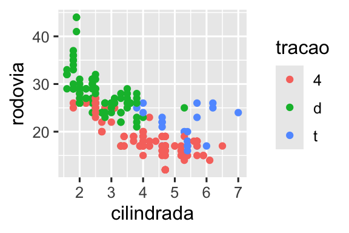

Contudo, a desvantagem desta transformação é que os eixos agora são rotulados com os valores transformados (log), dificultando a interpretação do gráfico. Em vez de fazer a transformação no mapeamento estético, podemos fazê-lo com a escala. Isto é visualmente idêntico, exceto que os eixos são rotulados na escala de dados original.
ggplot(diamante, aes(x = quilate, y = preco)) +
geom_bin2d() +
scale_x_log10() +
scale_y_log10()
Outra escala frequentemente personalizada é a cor. A escala categórica padrão seleciona cores uniformemente espaçadas no círculo cromático. Alternativas úteis são as escalas ColorBrewer que foram ajustadas manualmente para funcionar melhor para pessoas com tipos comuns de daltonismo. Os dois gráficos abaixo parecem semelhantes, mas há diferença suficiente nos tons de vermelho e verde para que os pontos à direita possam ser distinguidos até mesmo por pessoas com daltonismo vermelho-verde.[^comunicação-1]
ggplot(milhas, aes(x = cilindrada, y = rodovia)) +
geom_point(aes(color = tracao))
ggplot(milhas, aes(x = cilindrada, y = rodovia)) +
geom_point(aes(color = tracao)) +
scale_color_brewer(palette = "Set1")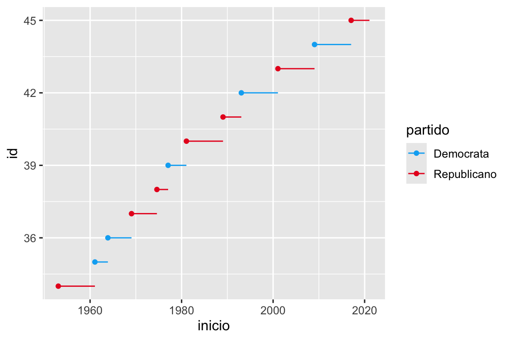
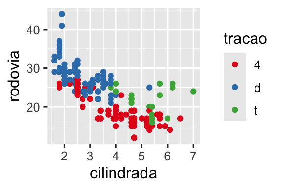
Não se esqueça de técnicas mais simples para melhorar a acessibilidade. Se houver apenas algumas cores, você poderá adicionar um mapeamento de forma redundante. Isso também ajudará a garantir que seu gráfico seja interpretável em preto e branco.
ggplot(milhas, aes(x = cilindrada, y = rodovia)) +
geom_point(aes(color = tracao, shape = tracao)) +
scale_color_brewer(palette = "Set1")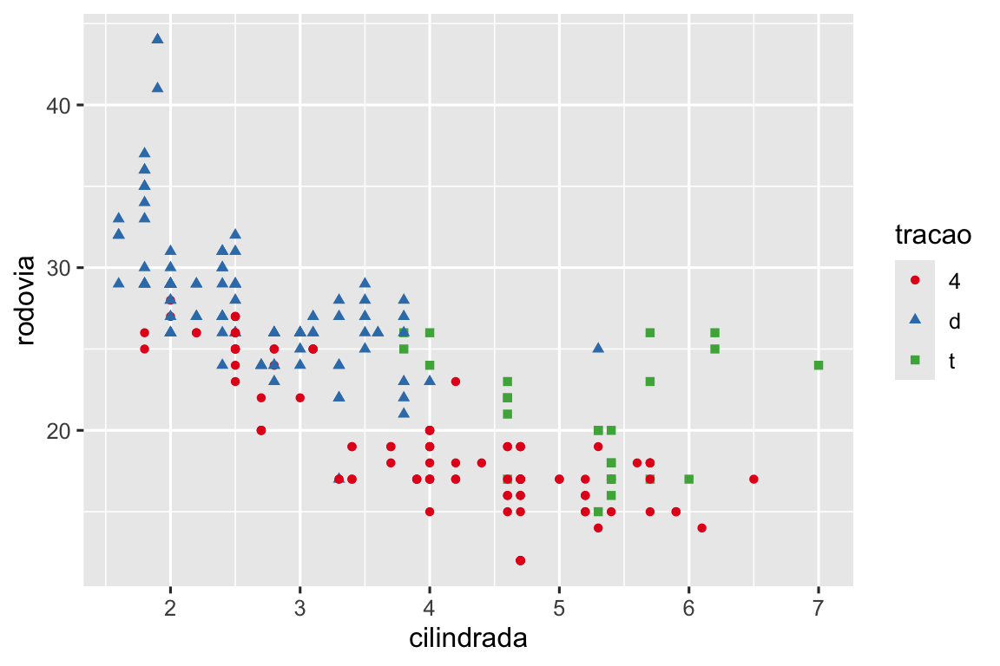
As escalas ColorBrewer estão documentadas online em https://colorbrewer2.org/ e disponibilizadas no R por meio do pacote RColorBrewer, de Erich Neuwirth. A Figura 11.1 mostra a lista completa de todas as paletas. As paletas sequenciais (superior) e divergente (inferior) são particularmente úteis se seus valores categóricos estiverem ordenados ou tiverem um “meio”. Isso geralmente surge se você usou cut() para transformar uma variável contínua em uma variável categórica.

Quando você tiver um mapeamento predefinido entre valores e cores, use scale_color_manual(). Por exemplo, se mapearmos o partido presidencial nos EUA por cor, queremos usar o mapeamento padrão de vermelho para os republicanos e azul para os democratas. Uma abordagem para atribuir essas cores é usar códigos de cores hexadecimais:
presidentes_eua |>
mutate(id = 33 + row_number()) |>
ggplot(aes(x = inicio, y = id, color = partido)) +
geom_point() +
geom_segment(aes(xend = fim, yend = id)) +
scale_color_manual(values = c(Republicano = "#E81B23", Democrata = "#00AEF3"))
Para cores contínuas, você pode usar as escalas scale_color_gradient() ou scale_fill_gradient(). Se você tiver uma escala divergente, poderá usar scale_color_gradient2(). Isso permite atribuir, por exemplo, cores diferentes a valores positivos e negativos. Às vezes, isso também é útil se você quiser distinguir pontos acima ou abaixo da média.
Outra opção é usar as escalas de cores viridis. Os designers, Nathaniel Smith e Stéfan van der Walt, adaptaram cuidadosamente esquemas de cores contínuas que são perceptíveis para pessoas com várias formas de daltonismo, bem como perceptivamente uniformes tanto em cores quanto em preto e branco. Essas escalas estão disponíveis como paletas contínuas (c), discretas (d) e agrupadas (b) no ggplot2.
df <- tibble(
x = rnorm(10000),
y = rnorm(10000)
)
ggplot(df, aes(x, y)) +
geom_hex() +
coord_fixed() +
labs(title = "Padrão, contínua", x = NULL, y = NULL)
#> Warning: Computation failed in `stat_binhex()`.
#> Caused by error in `compute_group()`:
#> ! The package "hexbin" is required for `stat_bin_hex()`.
ggplot(df, aes(x, y)) +
geom_hex() +
coord_fixed() +
scale_fill_viridis_c() +
labs(title = "Viridis, contínua", x = NULL, y = NULL)
#> Warning: Computation failed in `stat_binhex()`.
#> Caused by error in `compute_group()`:
#> ! The package "hexbin" is required for `stat_bin_hex()`.
ggplot(df, aes(x, y)) +
geom_hex() +
coord_fixed() +
scale_fill_viridis_b() +
labs(title = "Viridis, agrupada", x = NULL, y = NULL)
#> Warning: Computation failed in `stat_binhex()`.
#> Caused by error in `compute_group()`:
#> ! The package "hexbin" is required for `stat_bin_hex()`.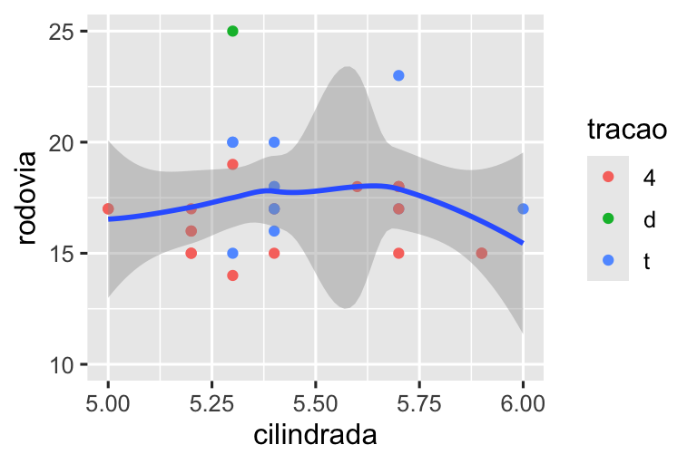
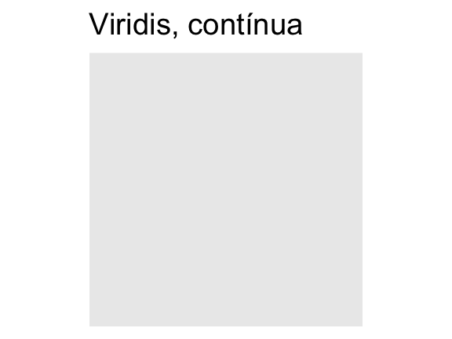
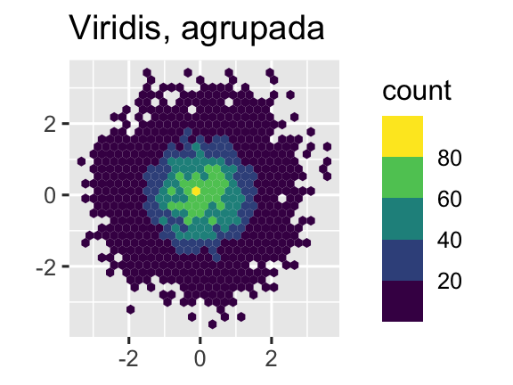
Observe que todas as escalas de cores vêm em duas variedades: scale_color_*() e scale_fill_*() para a estética color e fill respectivamente (as escalas de cores estão disponíveis nas grafias do Reino Unido e dos EUA).
11.4.5 Zoom
Existem três maneiras de controlar os limites do gráfico:
- Ajustando quais dados são plotados.
- Definir os limites em cada escala.
- Configurando
xlimeylimemcoord_cartesian().
Demonstraremos essas opções em uma série de gráficos. O gráfico à esquerda mostra a relação entre o tamanho do motor e a eficiência de combustível, colorida por tipo de trem de força. O gráfico à direita mostra as mesmas variáveis, mas subdivide os dados que são plotados. A divisão dos dados em subconjuntos afetou as escalas x e y, bem como a curva suave.
# Esquerda
ggplot(milhas, aes(x = cilindrada, y = rodovia)) +
geom_point(aes(color = tracao)) +
geom_smooth()
# Direita
milhas |>
filter(cilindrada >= 5 & cilindrada <= 6 & rodovia >= 10 & rodovia <= 25) |>
ggplot(aes(x = cilindrada, y = rodovia)) +
geom_point(aes(color = tracao)) +
geom_smooth()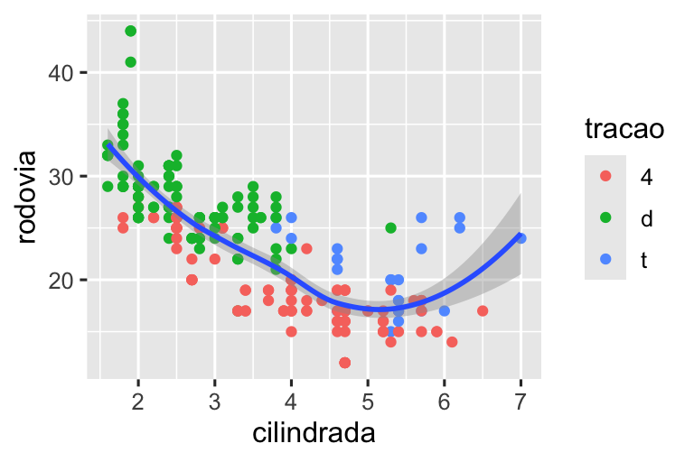
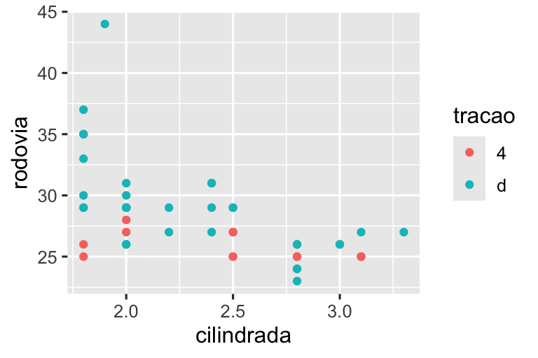
Vamos compará-los com os dois gráficos abaixo, onde o gráfico à esquerda define os limites em escalas individuais e o gráfico à direita os define em coord_cartesian(). Podemos ver que reduzir os limites equivale a subdividir os dados. Portanto, para ampliar uma região do gráfico, geralmente é melhor usar coord_cartesian().
# Esquerda
ggplot(milhas, aes(x = cilindrada, y = rodovia)) +
geom_point(aes(color = tracao)) +
geom_smooth() +
scale_x_continuous(limits = c(5, 6)) +
scale_y_continuous(limits = c(10, 25))
# Direita
ggplot(milhas, aes(x = cilindrada, y = rodovia)) +
geom_point(aes(color = tracao)) +
geom_smooth() +
coord_cartesian(xlim = c(5, 6), ylim = c(10, 25))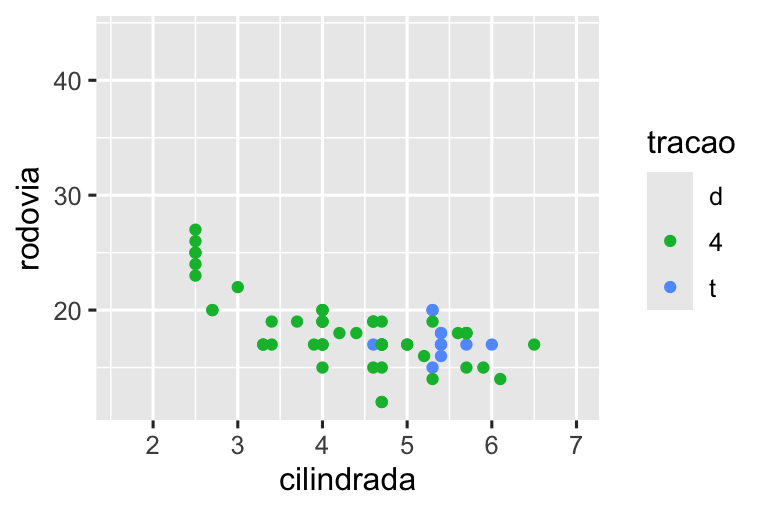
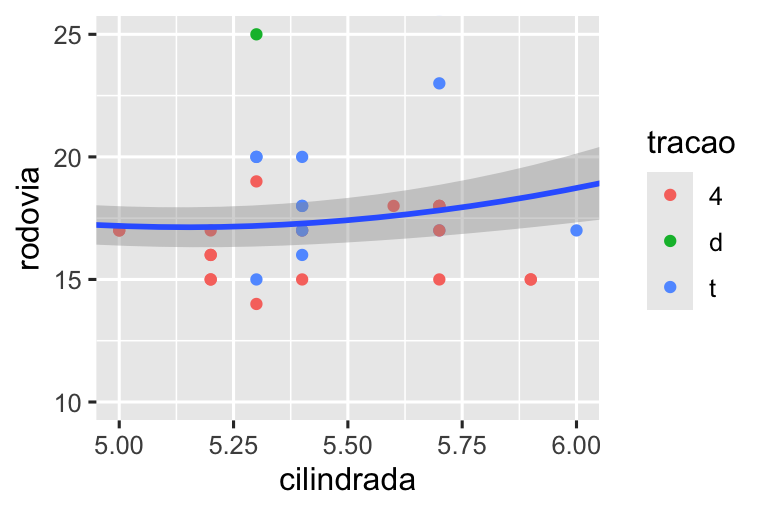
Por outro lado, definir os “limites” em escalas individuais é geralmente mais útil se você quiser expandir os limites, por exemplo, para combinar escalas em gráficos diferentes. Por exemplo, se extrairmos duas classes de carros e plotá-las separadamente, será difícil comparar os gráficos porque todas as três escalas (o eixo x, o eixo y e a estética da cor) têm intervalos diferentes.
suv <- milhas |> filter(classe == "suv")
compacto <- milhas |> filter(classe == "compacto")
# Esquerda
ggplot(suv, aes(x = cilindrada, y = rodovia, color = tracao)) +
geom_point()
# Direita
ggplot(compacto, aes(x = cilindrada, y = rodovia, color = tracao)) +
geom_point()![À esquerda, um gráfico de dispersão de eficiência de combustível nas rodovias versus cilindradas de SUVs. À direita, um gráfico de dispersão das mesmas variáveis para carros compactos.. Os pontos são coloridos por tipo de tração os gráficos. Entre os SUVs mais carros têm tração 4x4 e os demais têm tração traseira, enquanto entre os carros compactos, mais carros têm tração dianteira e os outros têm tração 4x4. O gráfico do SUV mostra uma clara relação negativa entre eficiência e cilindrada nas rodovias enquanto que no gráfico de carros compactos o relacionamento é muito mais achatado.](communication_files/figure-html/unnamed-chunk-30-1.png)
![À esquerda, um gráfico de dispersão de eficiência de combustível nas rodovias versus cilindradas de SUVs. À direita, um gráfico de dispersão das mesmas variáveis para carros compactos.. Os pontos são coloridos por tipo de tração os gráficos. Entre os SUVs mais carros têm tração 4x4 e os demais têm tração traseira, enquanto entre os carros compactos, mais carros têm tração dianteira e os outros têm tração 4x4. O gráfico do SUV mostra uma clara relação negativa entre eficiência e cilindrada nas rodovias enquanto que no gráfico de carros compactos o relacionamento é muito mais achatado.](communication_files/figure-html/unnamed-chunk-30-2.png)
Uma forma de superar este problema é compartilhar escalas em múltiplos gráficos, treinando as escalas com os “limites” dos dados completos.
escala_x <- scale_x_continuous(limits = range(milhas$cilindrada))
escala_y <- scale_y_continuous(limits = range(milhas$rodovia))
escala_cor <- scale_color_discrete(limits = unique(milhas$tracao))
# Esquerda
ggplot(suv, aes(x = cilindrada, y = rodovia, color = tracao)) +
geom_point() +
escala_x +
escala_y +
escala_cor
# Direita
ggplot(compacto, aes(x = cilindrada, y = rodovia, color = tracao)) +
geom_point() +
escala_x +
escala_y +
escala_cor![À esquerda, um gráfico de dispersão da eficiência de combustível nas rodovias versus cilindrada de SUVs. À direita, um gráfico de dispersão das mesmas variáveis para carros compactos. Os pontos são coloridos por tipo de tração. Ambos os gráficos são plotados na mesma escala para eficiência de combustível em rodovias, cilindrada e tipo de tração, resultando na legenda mostrando todos os três tipos (dianteiro, traseiro e nas 4 rodas) para ambos os gráficos, embora não haja SUVs com tração dianteira e não haja carros compactos com tração traseira. Como as escalas x e y são iguais, e vão muito além do mínimo e máximo da eficiência na rodovia e cilindradas, os pontos não ocupam toda a área do gráfico.](communication_files/figure-html/unnamed-chunk-31-1.png)
![À esquerda, um gráfico de dispersão da eficiência de combustível nas rodovias versus cilindrada de SUVs. À direita, um gráfico de dispersão das mesmas variáveis para carros compactos. Os pontos são coloridos por tipo de tração. Ambos os gráficos são plotados na mesma escala para eficiência de combustível em rodovias, cilindrada e tipo de tração, resultando na legenda mostrando todos os três tipos (dianteiro, traseiro e nas 4 rodas) para ambos os gráficos, embora não haja SUVs com tração dianteira e não haja carros compactos com tração traseira. Como as escalas x e y são iguais, e vão muito além do mínimo e máximo da eficiência na rodovia e cilindradas, os pontos não ocupam toda a área do gráfico.](communication_files/figure-html/unnamed-chunk-31-2.png)
Neste caso específico, você poderia simplesmente ter usado o facetamento, mas esta técnica é útil de forma mais geral, se, por exemplo, você quiser espalhar gráficos por várias páginas de um relatório.
11.4.6 Exercícios
-
Por que o código a seguir não substitui a escala padrão?
df <- tibble( x = rnorm(10000), y = rnorm(10000) ) ggplot(df, aes(x, y)) + geom_hex() + scale_color_gradient(low = "white", high = "red") + coord_fixed() #> Warning: Computation failed in `stat_binhex()`. #> Caused by error in `compute_group()`: #> ! The package "hexbin" is required for `stat_bin_hex()`. Qual é o primeiro argumento para cada escala? Como ele se compara a
labs()?-
Altere a exibição dos mandatos presidenciais do EUA:
- Combinando as duas variantes que personalizam cores e quebras do eixo x.
- Melhorando a exibição do eixo y.
- Rotulando cada mandato com o nome do presidente.
- Adicionando rótulos informativos ao gráfico.
- Acrescentando quebras a cada 4 anos (isto é mais complicado do que parece!).
-
Primeiro, crie o seguinte gráfico. Em seguida, modifique o código usando
override.aespara facilitar a visualização da legenda.ggplot(diamante, aes(x = quilate, y = preco)) + geom_point(aes(color = corte), alpha = 1/20)
11.5 Temas
Finalmente, você pode personalizar os elementos que não são dados de seu gráfico com um tema:
ggplot(milhas, aes(x = cilindrada, y = rodovia)) +
geom_point(aes(color = classe)) +
geom_smooth(se = FALSE) +
theme_bw()
O ggplot2 inclui os oito temas mostrados na Figura 11.2, com theme_gray() como padrão.1 Muitos outros estão incluídos em pacotes complementares como ggthemes (https://jrnold.github.io/ggthemes), de Jeffrey Arnold. Você também pode criar seus próprios temas, se estiver tentando combinar com um estilo corporativo ou de periódico específico.

Também é possível controlar componentes individuais de cada tema, como o tamanho e a cor da fonte usada no eixo y. Já vimos que legend.position controla onde a legenda é desenhada. Existem muitos outros aspectos da legenda que podem ser personalizados com theme(). Por exemplo, no gráfico abaixo mudamos a direção da legenda e também colocamos uma borda preta ao redor dela. Observe que a personalização da caixa de legenda e dos elementos do título do gráfico do tema é feita com as funções element_*(). Essas funções especificam o estilo de componentes que não são dos dados, por exemplo, o texto do título está em negrito no argumento face de element_text() e a cor da borda da legenda é definida no argumento color de element_rect(). Os elementos do tema que controlam a posição do título e da legenda são plot.title.position e plot.caption.position, respectivamente. No gráfico a seguir, eles são definidos como "plot" para indicar que esses elementos estão alinhados a toda a área do gráfico, em vez do painel de plotagem (o padrão). Alguns outros componentes theme() úteis são usados para alterar o posicionamento do formato do título e do texto da legenda.
ggplot(milhas, aes(x = cilindrada, y = rodovia, color = tracao)) +
geom_point() +
labs(
title = "Maior número de cilindradas tendem a ter menor economia de combustível",
caption = "Source: https://fueleconomy.gov."
) +
theme(
legend.position = c(0.6, 0.7),
legend.direction = "horizontal",
legend.box.background = element_rect(color = "black"),
plot.title = element_text(face = "bold"),
plot.title.position = "plot",
plot.caption.position = "plot",
plot.caption = element_text(hjust = 0)
)
#> Warning: A numeric `legend.position` argument in `theme()` was deprecated in ggplot2
#> 3.5.0.
#> ℹ Please use the `legend.position.inside` argument of `theme()` instead.
Para uma visão geral de todos os componentes theme(), consulte a ajuda com ?theme. O livro ggplot2 também é um ótimo lugar para obter todos os detalhes sobre temas.
11.5.1 Exercícios
- Escolha um tema oferecido pelo pacote ggthemes e aplique-o no último gráfico que você fez.
- Deixe os rótulos dos eixos do seu gráfico em azul e em negrito.
11.6 Layout
Até agora falamos sobre como criar e modificar um único gráfico. E se você tiver vários gráficos que deseja organizar de uma determinada maneira? O pacote patchwork permite combinar gráficos separados no mesmo gráfico. Carregamos este pacote no início do capítulo.
Para colocar dois gráficos próximos um do outro, você pode simplesmente adicioná-los um ao outro. Observe que primeiro você precisa criar os gráficos e salvá-los como objetos (no exemplo a seguir eles são chamados de p1 e p2). Em seguida, você os coloca um ao lado do outro com +.
p1 <- ggplot(milhas, aes(x = cilindrada, y = rodovia)) +
geom_point() +
labs(title = "Gráfico 1")
p2 <- ggplot(milhas, aes(x = tracao, y = rodovia)) +
geom_boxplot() +
labs(title = "Gráfico 2")
p1 + p2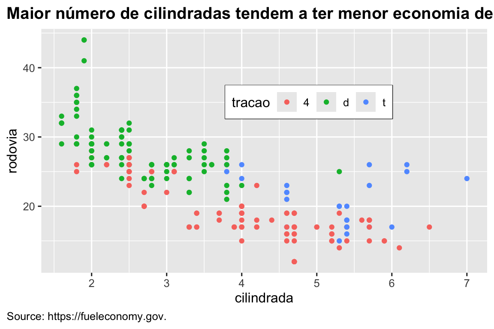
É importante notar que no trecho de código acima não usamos uma nova função do pacote patchwork. Em vez disso, o pacote adicionou uma nova funcionalidade ao operador +.
Você também pode criar layouts de gráficos complexos com patchwork. A seguir, | coloca p1 e p3 próximos um do outro e / move p2 para a próxima linha.
p3 <- ggplot(milhas, aes(x = cidade, y = rodovia)) +
geom_point() +
labs(title = "Gráfico 3")
(p1 | p3) / p2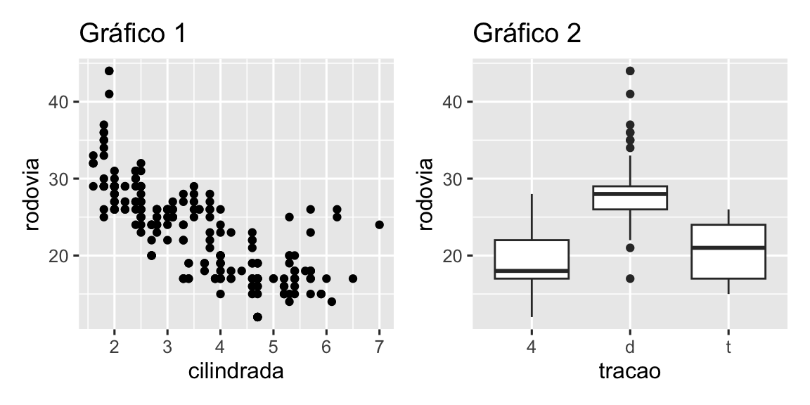
Além disso, patchwork permite coletar legendas de vários gráficos em uma legenda comum, personalizar o posicionamento da legenda, bem como as dimensões dos gráficos e adicionar um título, subtítulo, legenda comum, etc. Abaixo criamos 5 gráficos. Desativamos as legendas nos gráficos boxplot e no gráfico de dispersão e coletamos as legendas para os gráficos de densidade na parte superior do gráfico com & theme(legend.position = "top"). Observe o uso do operador & aqui em vez do usual +. Isso ocorre porque estamos modificando o tema do gráfico do patchwork em oposição aos ggplots individuais. A legenda é colocada no topo, dentro de guide_area(). Por fim, também personalizamos as alturas dos vários componentes do nosso patchwork - o guia tem altura 1, os gráficos de caixa 3, os gráficos de densidade 2 e o gráfico de dispersão facetado tem 4. Patchwork divide a área que você reservou para seu gráfico usando esta escala e posiciona os componentes de acordo.
p1 <- ggplot(milhas, aes(x = tracao, y = cidade, color = tracao)) +
geom_boxplot(show.legend = FALSE) +
labs(title = "Gráfico 1")
p2 <- ggplot(milhas,aes(x = tracao, y = cidade, color = tracao)) +
geom_boxplot(show.legend = FALSE) +
labs(title = "Gráfico 2")
p3 <- ggplot(milhas, aes(x = cidade, color = tracao, fill = tracao)) +
geom_density(Gráfico = 0.5) +
labs(title = "Gráfico 3")
#> Warning in geom_density(Gráfico = 0.5): Ignoring unknown parameters:
#> `Gráfico`
p4 <- ggplot(milhas, aes(x = rodovia, color = tracao, fill = tracao)) +
geom_density(alpha = 0.5) +
labs(title = "Gráfico 4")
p5 <- ggplot(milhas, aes(x = cidade, y = rodovia, color = tracao)) +
geom_point(show.legend = FALSE) +
facet_wrap(~tracao) +
labs(title = "Gráfico 5")
(guide_area() / (p1 + p2) / (p3 + p4) / p5) +
plot_annotation(
title = "Eficiência nas cidades e rodovias com diferentes trações",
caption = "Fonte: https://fueleconomy.gov."
) +
plot_layout(
guides = "collect",
heights = c(1, 3, 2, 4)
) &
theme(legend.position = "top")![Cinco gráficos dispostos de forma que os dois primeiros fiquem próximos uns dos outros. Os gráficos três e quatro estão abaixo deles. E o quinto gráfico se estende abaixo deles. O gráfico patchwork é entitulado "Eficiência nas cidades e rodovias com diferentes trações" e com legenda "Fonte: https://fueleconomy.gov". Os dois primeiros gráficos são gráficos boxplot. Os gráficos 3 e 4 são de densidade. O quinto gráfico é um gráfico de dispersão facetado. Cada um desses gráficos mostra geoms coloridos pelo tração, mas o gráfico patchwork tem apenas uma legenda que se aplica a todos eles, acima dos gráficos e abaixo do título.](communication_files/figure-html/unnamed-chunk-39-1.png)
Se você quiser saber mais sobre como combinar e fazer o layout de vários gráficos com o pacote patchwork, recomendamos consultar os guias no site do pacote: https://patchwork.data-imaginist.com.
11.6.1 Exercícios
-
O que acontece se você omitir os parênteses no layout de gráfico a seguir. Você pode explicar por que isso acontece?
p1 <- ggplot(milhas, aes(x = cilindrada, y = rodovia)) + geom_point() + labs(title = "Gráfico 1") p2 <- ggplot(milhas, aes(x = tracao, y = rodovia)) + geom_boxplot() + labs(title = "Gráfico 2") p3 <- ggplot(milhas, aes(x = cidade, y = rodovia)) + geom_point() + labs(title = "Gráfico 3") (p1 | p2) / p3 -
Usando os três gráficos do exercício anterior, recrie a seguinte gráfico patchwork.

11.7 Resumo
Neste capítulo você aprendeu como adicionar rótulos aos gráficos, como título, subtítulo, legenda, bem como modificar rótulos de eixo padrão, usar anotações para adicionar texto informativo ao seu gráfico ou para destacar pontos de dados específicos, personalizar as escalas dos eixos e alterar o tema do seu enredo. Você também aprendeu como combinar vários gráficos em um único gráfico usando tanto layouts simples e complexos de gráficos.
Embora você tenha aprendido até agora como criar muitos tipos diferentes de gráficos e como personalizá-los usando uma variedade de técnicas, mal arranhamos a superfície do que você pode criar com o ggplot2. Se você deseja obter uma compreensão abrangente do ggplot2, recomendamos a leitura do livro ggplot2: Elegant Graphics for Data Analysis. Outros recursos úteis são o R Graphics Cookbook de Winston Chang e Fundamentals of Data Visualization de Claus Wilke .
Muitas pessoas se perguntam por que o tema padrão tem um fundo cinza. Esta foi uma escolha deliberada porque apresenta os dados e ao mesmo tempo torna as linhas da grade visíveis. As linhas de grade brancas são visíveis (o que é importante porque auxiliam significativamente no julgamento de posição), mas têm pouco impacto visual e podemos facilmente desligá-las. O fundo cinza confere ao gráfico uma cor tipográfica semelhante ao texto, garantindo que os gráficos se ajustem ao fluxo de um documento sem sobressair com um fundo branco brilhante. Finalmente, o fundo cinza cria um campo contínuo de cor que garante que o enredo seja percebido como uma entidade visual única.↩︎